别再说跑步伤膝盖了，这 6 本书运动健康方面的书籍，一定都看看！！！
有感于下面这条文章中的留言，该用户的核心观点是：跑步伤膝盖！！！

这个是有很多自媒体和官媒都辟谣过的内容了，跑步造成膝盖损伤的原因大多都是采取了不正确的跑步姿势+过高运动强度（不适合自身）的叠加。
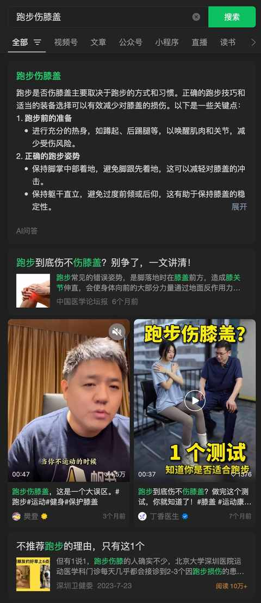
在询问 kimi 这个问题之后，也给到了很详实的回答：
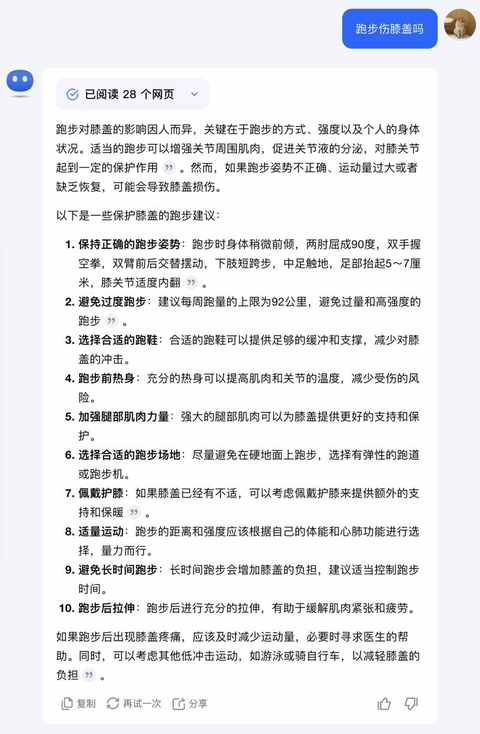
其实，任何运动形式采取不良的姿势，持续地做有一定强度的运动必然会增加运动损伤风险。
那么，问题就变为：如何采取科学的去进行各项运动，尽量减少运动损伤，让运动寿命变得足够长。
首先要做的就是快速补齐运动健康方面的常识，提升自己在运动健康方面的认知水平，对运动健康方面的知识做一些系统性的了解。
从个人最近一年多各种尝试和踩坑的情况来看，阅读相关书籍反而是比看各种自媒体内容更好的方法，反而在阅读相关书籍之后，对自媒体的内容也能做出更好的判断和甄别。
进入正题，本次推荐 6 本运动健康方面的图书，以下书籍排名不分先后，按需阅读即可，每一本都能让你有所收获：
1️⃣《超越百岁》
推荐度：⭐️⭐️⭐️⭐️⭐️
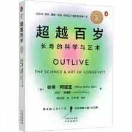
推荐理由：
想长寿：有氧适能水平、稳定性、握力和心理健康同样重要！
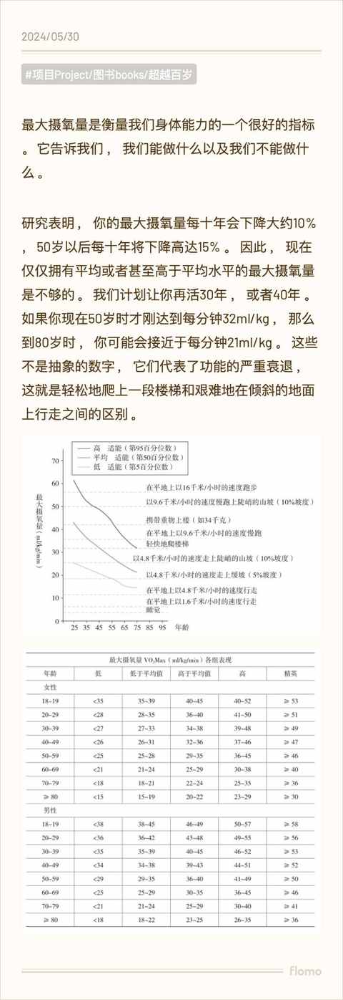
当时读完之后觉得很有收获，梳理过一篇读书笔记：
读完《超越百岁》，让你更有把握活到一百岁！
2️⃣《施瓦辛格健身全书》
推荐度：⭐️⭐️⭐️⭐️⭐️
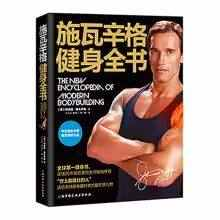
推荐理由：
没有任何理由不去坚持健身，健身就是生活必备项目之一：坚持系统的科学训练！
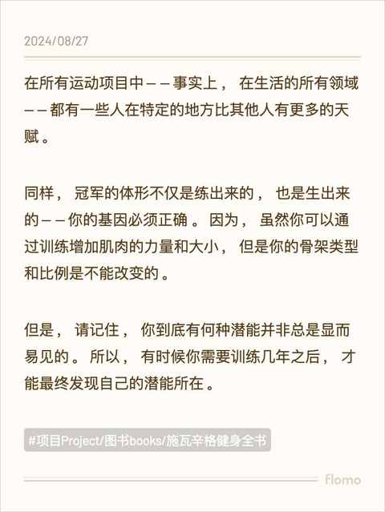
3️⃣《控糖革命》
推荐度：⭐️⭐️⭐️⭐️
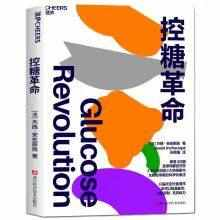
推荐理由：
坚持正确的饮食顺序能更有饱腹感且能让血糖稳定，进而稳定胰岛素水平，进而有利于保持 身体 健康和控制体重，也能最大程度排除患上糖尿病的隐患。
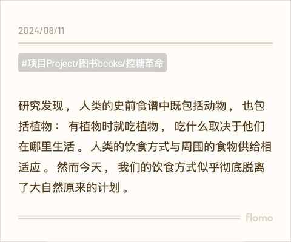
最近几个月看过不少讲控糖和戒糖方面的内容，在多个平台都看到有人推荐这本书，读完之后觉得很适合实践：
想要控糖吗？不妨先看看这本《控糖革命》！
4️⃣《 刷新 PB》
推荐度：⭐️⭐️⭐️⭐️
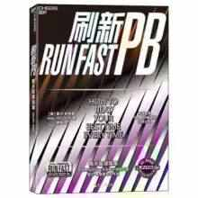
推荐理由：
跑步是人类的本能，每个人都是天生的跑者。
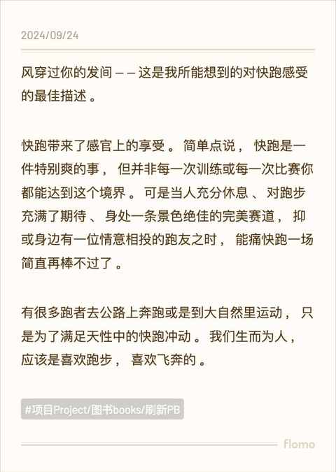
5️⃣《力量训练基础》
推荐度：⭐️⭐️⭐️⭐️
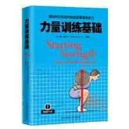
推荐理由：
力量训练的底层逻辑、三大项的动作细节、健身房的选择、饮食计划、训练计划等等，这本书里面都有，即使你目前不练三大项这本书也值得一看。
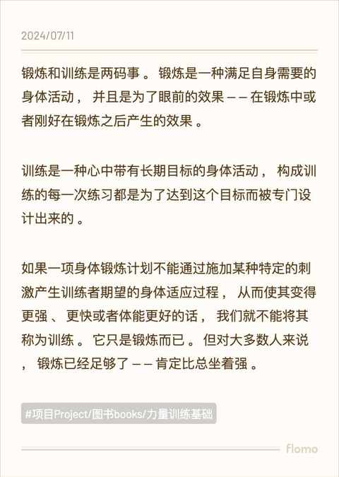
6️⃣《精准拉伸》
推荐度：⭐️⭐️⭐️⭐️ ⭐️
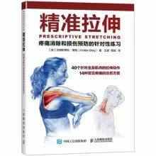
推荐理由：
人体是一个极其复杂的系统，每一块肌肉和骨骼都可能会相互影响，拉伸是和运动同样重要甚至更重要的事情。
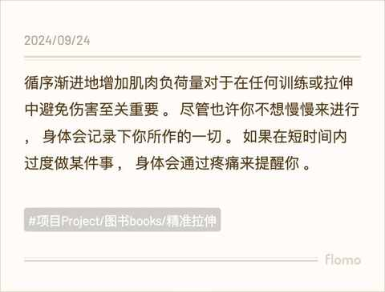
运动 不息，学习不止！ 希望上面的 6 本书能帮助到你，如果你有推荐的书籍也可以留言。